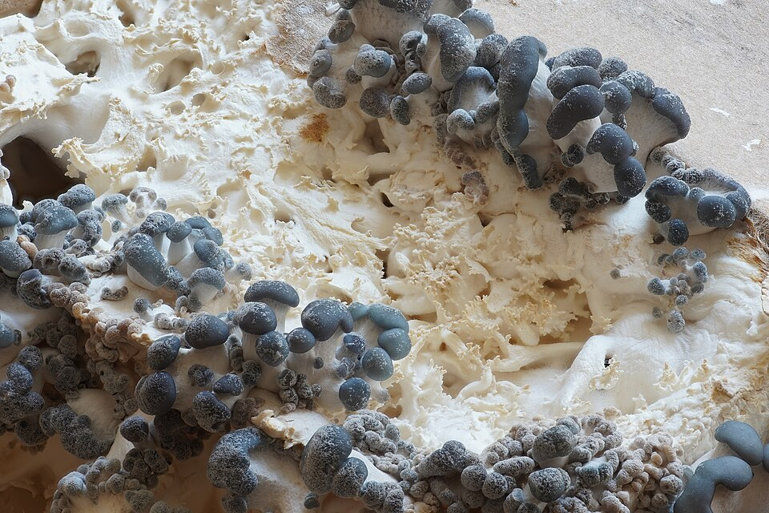
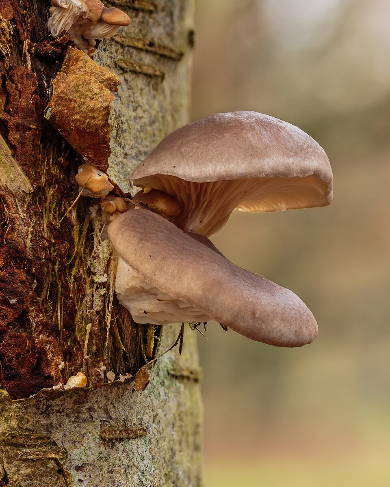

Boczniak ostrygowaty



Opis i występowanie
Boczniak ostrygowaty to jeden z najłatwiejszych do rozpoznania i najbezpieczniejszych dzikich grzybów jadalnych — idealny dla początkujących zbieraczy. Rośnie na pniach i pniakach drzew liściastych (buk, topola, jesion, wiąz) tworząc charakterystyczne nakładające się grona podobne do ostryg. Spotykany w całej Polsce, Czechach i Słowacji od września do marca — często nawet po pierwszych mrozach.
Kapelusz szaroniebieski do kremowego, 5–25 cm, z charakterystycznym bocznym przytwierdzeniem do drewna. Blaszki białe, gęste, zbiegające na krótki trzon lub bezpośrednio na drewno. Miąższ biały, twardy, delikatny zapach anyżu lub migdałów. Nie mylić z niczym niebezpiecznym — rośnie na drewnie liściastym, wygląd i siedlisko niepowtarzalne.
Skład — wyjątkowe wartości zdrowotne
| Składnik | Wartość / efekt zdrowotny |
|---|---|
| Lowastatyna (naturalny statyn) | Obniża LDL cholesterol — unikatowa cecha boczniaka |
| Beta-glukany | Stymulacja układu odpornościowego, działanie przeciwnowotworowe |
| Witamina B12 (rzadka w grzybach!) | Niezbędna weganom i wegetarianom |
| Witamina D2 | Wchłanianie wapnia, odporność |
| Białko (3,3 g/100g) | Kompletne aminokwasy, w tym all EAA |
| Ergotioneina | Antyoksydant, ochrona komórek |
| Kalorie: 33 kcal/100g | Niskokaloryczny, sycący |
Zastosowania kulinarne
- Smażenie na maśle — najlepszy sposób, krótki czas, intensywny smak.
- Grillowanie — duże kapelusze grillowane całe lub w plasterkach.
- Stir-fry — azjatycki sposób z imbirem i sosem sojowym.
- Zupy i gulasze — mięsista tekstura świetna w bulionach.
- Suszenie — mielony proszek jako przyprawa umami.
Przepisy
🍳 Boczniaki smażone z czosnkiem i cytryną
- Boczniaki rozdziel na mniejsze płaty, duże pokrój.
- Na gorącym maśle smaż 8 min na dużym ogniu — pozwól zrumienić się bez mieszania.
- Dodaj czosnek, sól, pieprz, skórkę z cytryny. Smaż 2 min.
- Skrop sokiem z cytryny, posyp natką. Podawaj z chlebem lub makaronem.
🥢 Boczniaki stir-fry po azjatycku
- Boczniaki pokrój w paski. Imbir i czosnek zetrzyj lub posiekaj drobno.
- Na rozgrzanym oleju sezamowym smaż imbir i czosnek 30 sek.
- Dodaj boczniaki, smaż 5 min na dużym ogniu ciągle mieszając.
- Dodaj sos sojowy, trochę mirin, szczypiorek. Podawaj z ryżem.
🍲 Zupa z boczniаkami i makaronem
- Cebulę i czosnek zeszklij. Dodaj boczniaki pokrojone, smaż 5 min.
- Wlej 1,5 l bulionu warzywnego lub drobiowego. Gotuj 15 min.
- Dodaj makaron na 10 min przed końcem. Dopraw i posyp natką.
🔥 Grillowane boczniaki z ziołowym masłem
- Masło ziołowe: masło + czosnek + tymianek + rozmaryn + sól.
- Kapelusze boczniаków posmaruj masłem ziołowym.
- Grilluj 4 min z każdej strony. Podawaj od razu jako przystawkę.
✓ Zalety
- Brak groźnych sobowtórów — idealny dla początkujących
- Sezon całoroczny — rośnie nawet w zimie
- Wyjątkowe właściwości zdrowotne (lowastatyna, beta-glukany)
- Bogaty w witaminę B12 — ważny dla wegetarian
- Dostępny też w sklepie (hodowlany)
- Doskonały smak i mięsista tekstura
✗ Wady i uwagi
- Stare okazy twardnieją i stają się gumowate
- Szybko się psuje po zbiorze — przerabiaj tego samego dnia
- Dzikie okazy bywają twarde przy dużych kapeluszach — gotuj dłużej
- Nie wszystkie drzewa nadają się — unikaj z topoli przydrożnych (zanieczyszczenia)
Ciekawostki
- Boczniak jest aktywnym drapieżnikiem — jego grzybnia produkuje związki narkotyzujące nicienie glebowe, które następnie absorbuje jako źródło azotu.
- Lowastatyna w boczniaku to ta sama substancja co w popularnych lekach na cholesterol — boczniak zawiera ją naturalnie w ilościach klinicznie nieistotnych, ale badania potwierdzają efekt przy regularnym spożyciu.
- W Chinach boczniak jest uprawiany od ponad 1000 lat. Dziś to drugi najchętniej hodowany grzyb na świecie (po pieczarce).
- Grzybnię boczniaka można wyhodować w domu na słomie, trocinach, a nawet kartonach — zestawy do hodowli to popularny prezent.